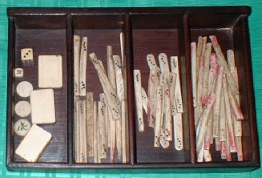
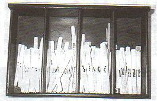
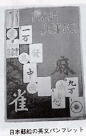
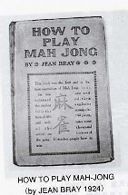

民族ゲームから世界ゲームへ
AD1840年、イギリスと中国の間に第一次阿片戦争が勃発した。これはイギリスの東インド会社が中国茶の代金の代わりにインド産の阿片を中国に大量に輸出。その支払いのため、銀が中国から大量に流出した。
社会的にも経済的にも大打撃を受けた中国(道光帝)は欽差大臣(特命全権大臣）、林則徐を広州に派遣して阿片密輸の徹底取り締まりに当たらせた。しかしこれを好機と判断した英国は大艦隊を派遣し、戦争となった。
この戦争に勝利したイギリスは中国と南京条約を締結、香港の九九年間*12の租借権、また広州・廈門・福州・寧波・上海の開港を受けるなど、中国大陸に足がかりを得た。
*12イギリスが永久租借を主張したのに対し、中国は久々年間を提案。そして「久々年間は“永久”という意味」と説明し、久々年間で条約を締結した。そして実際に久々年（99年）を迎えたとき、条約通り香港は返還された。
その後、第二次阿片戦争（アロー号事件に端を発した戦争なので、「アロー戦争」とも呼ぶ）等を経てさらに橋頭堡を築いた列強はついに租界*13を確保するに至った。この租界は各地に設けられた。その中でもっとも有名なのは上海租界*14である。
*13本来は外国人の単なる集団的居住地であるが、警察・行政などの自治権を持つに至った治外法権地域。
*14それ以前、開港されていたのは広州の１港のみで、中国各地への輸送ルートにも限りがあった。しかし上海が開港されると中国貿易の拠点となり、中国随一の租界となった。
この上海租界はさらにイギリス租界*15、フランス租界等に分かれていたが、20世紀に入ると、この租界の中、特にイギリス租界の中で麻雀が大流行した。そしてこの租界での大流行は、麻雀に二つの変革をもたらした。それはまず籌馬(点棒)の登場である。
＊15アメリカも上海に租界を作ろうとしたが、結局イギリス租界の中に共住した。
中国における麻雀は、純然たるギャンブルとしてのゲームであった。そこで得失点はアガリがあった都度、現金で精算されていた。とうぜん得失点を記録しておくための点棒やチップは必要はなかった。
欧米人も当初は同様の方法で現金精算をしていたと思われるが、現金精算の場合、両替の必要も生じる。これでは面倒というのでゲーム後の精算が求められ、得失点の動きを最後まで記録しておく用具、籌馬(チョーマ)＝点棒が求められた。そこで選ばれたのが抽籤(チューチェン)*16というゲームの用具と思われる。
抽籤はAD1930年代に中国で盛んに遊ばれていたギャンブルの１種。筮竹（ぜいちく）様の竹の棒に天九牌の目を刻印したもの32本を用いる。この細長い棒は４種類ほどあり、ほぼ金銭の種類とマッチしていた。そこでこれを金銭の代わりに授受し、最後に精算を行うようになったと考えられる。
＊16細長い竹の棒を籤といい、それを抽（ひ）き出して得点を争うので抽籤と呼ぶ。親と子に分かれ、子が竹筒に入れた籤を３本引く。引いた３本が下記のようになっていれば子の勝ちで親から配当を得る。親は常に籤を引かない。通常、子が勝てば賭け金１に対して６倍の配当を受け、もし翻牌ならその２倍を取得する。
親に勝つ組み合わせは次の通り。
①３本籤の目の内、3つが同じで、後の3つの目の合計数が14以上のもの。
②順子＝３本籤の目が1、2、3、4、5、6と繋がっているもの。
③眞五子＝３本籤の目の内、５つが同数のもの。
④天邦子(「邦」は木偏)：6:6、3:3、2:2の三本籤の組み合わせ。
⑤翻牌：(1)仮五子：三本の内、四つの目が同じで後二つの目の合計が、四つの目の数と同じになるもの(四つの目の合計数と同じになるのではない)。(2)花排隊(翻牌)：4:5
以上、梅林勲氏の考証による。
この金銭代用である籌馬も当初は天九牌の目そのものの紋様で用いられていた。抽籤はおみくじのように棒を竹筒から抽き出すゲームであるため、抽き出された瞬間に牌種が判別できるよう、その紋様は棒の両端に刻印されていた。

※古い籌馬・刻印両端タイプ
やがてイギリス人は多少デザインの異なった籌馬を用いるようになった。これをEnglish Marking（イングリッシュ マーキング）と呼ぶ。しかし多少デザインは異なっても、刻印は両端にあったのは同様であった。しかし麻雀専用の籌馬となれば、刻印が棒の両端にある必要はない。そこでやがて刻印が中央にあるタイプが製造され始めた。

※古い籌馬・刻印中央タイプ
このEnglish Markingも時日の経過とともにポーカーチップに取って代わられて行った。しかしポーカーチップに取って代わられたEnglish Markingの籌馬も、日本伝播に際しては無くてはならぬ付属品として伝来し、以来、日本麻雀では必要不可欠な存在となっている。
上海租界の中で流行した麻雀の二つ目の大変化は、民族ゲームから世界的ゲームへの成長である。すなわち麻雀は、それをマスターした欧米人によって欧米、東アジア、そして日本へ伝播した。これによって中国の民族ゲームが世界的ゲームへと成長していった。
欧米への伝播
ヨーロッパへは主として東インド会社＊17を通じてインドヨーロッパ航路を有するイギリスによって伝播した＊18。そして1920年代には、イギリスはもとよりヨーロッパ全域にも普及していった。
*17AD1600年、インドに設立された国策会社。東インド全域の貿易を独占し拠点等を武 装化、徴税権までも有した。中国からは茶を輸入しインド産の阿片を輸出、これが阿片 戦争の原因となった。AD1857年の大反乱の後、AD1857年に解散した。
*18当時のヨーロッパ航路船には、かならず「How to Play Majang」という入門書が備え付けられていたという。
AD1926年、イギリスの著名なミステリー作家、アガサ・クリスティ*19が、有名なエルキュール・ポアロ探偵の登場する「アクロイド殺人事件」＊20という小説を発表した。この小説は、20世紀初頭にイギリスのキングス・アボットというヴィレッジで発生した殺人事件がテーマであるが、この中に麻雀シーンが登場する。
*19AD1890年、イギリスのトーキイに生まれる。AD1976年、85歳で死去。長編66冊、 短編集23冊余の著作がある。
＊20アガサ・クリスティ長編第六作目。世界初の本格的な倒叙推理小説として有名。
この小説が発表されたAD1926年、36歳であったアガサ・クリスティにとって、20世紀初頭はリアルタイムの世界である。そこで小説の舞台となっているキングズ・アボット・ヴィレッジは架空であっても、麻雀が20世紀初頭にはイギリス社会における社交ゲームとして普及していたという当時の麻雀事情を伺わさせる。
さらにその麻雀シーンには、インド・上海を転歴したという軍人が登場し*21、上海での麻雀経験について語るシーンが登場する*22。これによっても麻雀が上海、インドというルートでイギリスへ伝播したという事情を伺い知ることが出来る。
*21アガサ・クリスティの最初の配偶者は、インド駐在経験もある軍人。
*22「この頃はチャウといはないで、チイと発音するんぢゃありません？」とガネット嬢はちょっと話をそらした。「ばかげているわ、そんなの！私はいつだってチャウといっているのよ」とカロリンがいった。「上海クラブではチャウといっておりました」とカーター大佐がいったので、ガネット嬢は敗北して退却した。
米国への伝播は上海ー米国間の太平洋航路によった。この船上で旅の無聊を慰めるため好んで麻雀がプレーされた。日本郵船KKなど日本の船会社でも、英文の解説パンフレットを備えるなどして船客に提供していた*23。
*23「MAH JONG」大正13年８月20日、日本郵船KK刊

そこで船上では、中国のゲームであるにも拘わらず役名など用語はすべて英語で呼称していたという*24。このように太平洋航路の船上で麻雀が盛んに楽しまれたとの記述は多くあり、太平洋ルートの存在を裏付けている*25。
*24平和はオールチー、対々和はオールポン、清一色がセームカラーなど。
*25福地信世「麻雀私語(林茂光麻雀研究所機関誌「麻雀」昭７・２月号)」、柳沢正実「麻雀むかし語り（日雀連愛知県本部機関誌「麻雀春秋」昭35・9/1号)」
こうして太平洋航路を経てアメリカへ伝播した麻雀は、まずサンフランシスコ、ロスアンジェルスなど太平洋沿岸の都市に到達、やがてニューヨーク、ロングアイランドなど大西洋側の都市まで爆発的に伝播し、解説書も数多く出版された*26。
*26代表的な書籍にJoseph・P・Babcock「BABCOCK’RULES FOR MAH-JONG THE RED BOOK
OF RULES 」、Jean ray「HOW TO PLAY MAH-JONG」等がある。

当時は晩餐会の後でも、グリーンのテーブルクロスの上で麻雀が楽しまれたほどであったと伝えられる*27。そこでサンフランシスコの材木業者Ｗ・Ａ・ハモンドは牌の大量輸入を企画し、1922年九月にはすでに五万ドルの牌を輸入したと言われる*28。
*27この流れを受けて現在もアメリカではそれなりに麻雀が行われている。しかし日本同様、アメリカでもルールは激変した。現在では、麻雀とポーカーが融合したような麻雀が行われている。
*28Ｆ・Ｌ・アレン著「オンリー・イェスタディ」(研究社刊・藤久ミネ訳)。（村石利夫「麻雀101話」）
そして大々的な宣伝を行った結果、麻雀熱は更に広がり、中国メーカーの製造も追いつかず需要に応じられないほどであった。そこでアメリカ国内でも麻雀牌の生産が始まったが、材料の牛骨も不足がちで、鯨骨*29、海豹の骨までも材料とされたほどであった。
*29当時アメリカでは、ハワイを拠点にした太平洋上での捕鯨が盛んであった。
|